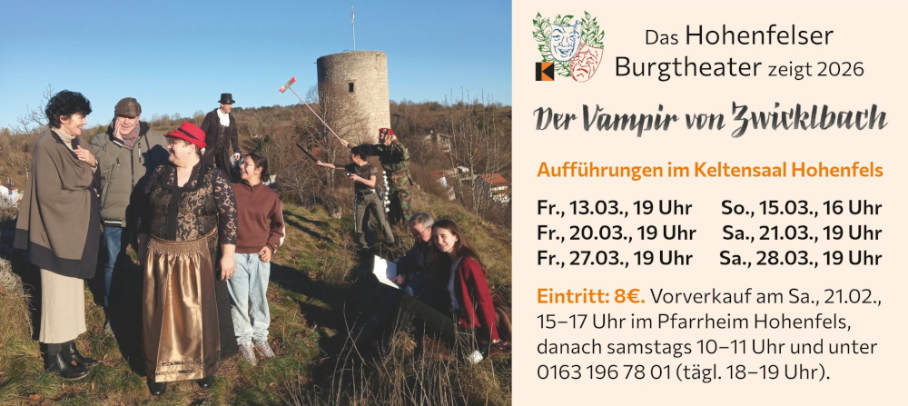

@charak
@charakÜber die Musik im „Vampir“
In meiner Freizeit spiele ich im Hohenfelser Burgtheater mit, einer Laienspielgruppe unter dem Dach des hiesigen Kolpingvereins. Dieses Jahr im März bringen wir Ralph Wallners Stück Der Vampir von Zwickelbach auf die Bühne. Allerdings werde ich nicht mitspielen, denn ich habe die Aufgabe des Regisseurs übernommen. So mache ich mir seit Wochen schon Gedanken über Werbung, Bühnenbild, Beleuchtung, Kostüme … und natürlich leite ich die Proben und versuche mit den Schauspieler:innen die Figuren zu gestalten.

Darüber hinaus habe ich mir vorgenommen, die Musik für unser Theaterstück selbst zu komponieren. Ich habe bei der örtlichen Jugendblaskapelle angefragt und sie möchte tatsächlich mitmachen und mit mir die Stücke aufnehmen. Zwar hätte ich vorhandene Musik suchen können (z. B. Celine Dions My Heart Will Go On für die Liebesszenen oder Verdis Dies Irae für sehr dramatische Momente), aber selbstkomponiert hat die Musik exakt die Länge und Intensität, die ich mir an der jeweiligen Stelle vorstelle.
Wie kommt man auf die Musik?
Inhaltlich spielt „Der Vampir von Zwickelbach“ in einem alten Gutshof, den die Besitzerin gern an ein neureiches Paar verkaufen möchte. Doch im verlassenen Weinkeller haust ein Vampir, dessen Biss unerwartete Folgen hat. Das bekommt auch ein junges Liebespaar zu spüren, das den Weinkeller für ein Stelldichein nutzen wollte. Ob zwei verrückte Vampirjäger zu einem guten Ende beitragen, ist zweifelhaft … Hier die ausführliche Stückbeschreibung des Autors, die aber viel verrät.
Zunächst habe ich im Textbuch die Stellen herausgesucht, wo Musik die Handlung unterstützt und bereichert. Lieber etwas weniger Musik und dafür zu den Momenten, wo sie die Dramatik oder die Gefühle der Figuren gut unterstreicht. Letztlich bin ich auf drei Themen gekommen:
- der Moment, in dem der Vampir zubeißt
- das Mantra, mit dem sich die Vampirjäger motivieren
- ein romantisches Liebesthema
Dann habe ich mir Text und Handlung an den entsprechenden Stellen genau angesehen und überlegt, wie eine Musik dazu passen würde, wann sie alleinstehen muss und wann sie besser ruhig unter dem gesprochenen Text liegt.
1) Vampirbiss: Schreck, Ärger und Ohnmacht
Beim Biss des Vampirs habe ich musikalisch das nachgezeichnet, was der Betroffene durchlebt: Zunächst eine plötzliche Überraschung (ein Paukenschlag), Schmerz und Zorn (ein lauter, dissonanter Akkord) und schließlich Schwindel und Ohnmacht (abwärts gerichtete Melodie). Am Ende folgen noch drei etwas „magische“ Akkorde mit Glockenspiel, die den Effekt des Bisses andeuten – mehr wird hier nicht verraten. Im Notenbild sieht das so aus (hier zwecks Übersicht ohne Flöte und Posaune):

Und so klingt das ganze (mit Flöte und Posaune). Vorläufig nur mit den künstlichen Instrumenten der MIDI-Ausgabe, das tausche ich später aus, sobald ich die Aufnahme mit Orchester-Ensemble habe:
2) Beschwörung: „Wir fangen einen Vampir“
Für den Gesang der Vampirjäger war rhythmisch natürlich der Text ausschlaggebend. Die beiden Figuren sprechen beschwörend immer wieder: „Wir fangen einen Vampir“. Dafür habe ich erst mal nach einer mantra-artigen Betonung gesucht. Am einfachsten funktioniert das für mich, wenn ich den Satz wiederholt vor mich hin sage, verschiedene Betonungen ausprobiere und darauf achte, welche natürliche Sprachmelodie sich ergibt. Dadurch bin ich schließlich bei einem 6/8-Takt und einem eher flachen Melodieverlauf gelandet. Als Hilfe für die Darsteller:innen lasse ich den Rhythmus anfangs von der Trommel spielen. (Noten hier ohne Tuba, Trommel ab Takt 3, restliche ab Takt 5)

In dieser Szene stimmt ab der Hälfte eine dritte Figur in den Gesang ein, die es übertreibt und am Ende ins Opernhafte abgleitet. Dafür habe ich mir ein Musikzitat aus Mozarts Zauberflöte geliehen, die berühmte zweiten Arie der Königin der Nacht („Der Hölle Rache kocht in meinem Herzen“). Die steht zwar im 4/4-Takt, aber das konnte ich aufeinander abstimmen und ein Taktwechsel am Ende unterstützt das Chaotische der Situation.
Außerdem wollte ich noch etwas Unheimliches, Unheilverkündendes und habe die Harmonien so angelegt, dass die Posaune mit dem mittelalterlichen Dies Irae einsteigen konnte – eine sehr oft zitierte Melodie, die vielleicht der ein oder andere heraushört. Weggelassen habe ich das Siegfried-Motiv von Wagner, Fußball-Spottgesänge und stürzende Linien in der Klarinette – man muss bei einem Bündel an Ideen auch aussortieren.
3) Liebesthema: Ein- und Ausatmen
An zwei Stellen sprechen Figuren über ihren Geliebten. Ich wollte dies mit einer zarten Melodie unterstützen, die dezent unter dem Text liegt. Das heißt: Ein eher unauffälliger Rhythmus, leise Töne, ruhige Akkorde und eine reduzierte Instrumentierung: Keine Blechbläser, keine Schlaginstrumente, sondern Klarinette, Oboe und Bassklarinette.
Vom Melodieverlauf habe ich mich am Atmen orientiert: Luft holen, erwartungsvoll hoffen und schmachtend ausatmen. Damit ich trotzdem ein wiedererkennbares Element habe, beginnt das Thema mit drei aufsteigenden Achteln und einem wiederholten, längeren Ton; hier die Noten:

Großen Spaß macht es mir, die verschiedenen Musikmotive dann miteinander zu kombinieren. Zum Beispiel taucht am Schluss zwar ganz penetrant das Liebesthema auf, aber die Flöte streut ein „Jetzt haben wir einen Vampir“ aus der Beschwörung dazwischen. Und bei einem späteren Vampirbiss erklingt das Liebesthema im Glockenspiel (keine Sorge, das ergibt in der Handlung Sinn).
Musik schreiben für Orchester-Ensemble
Für mich war das Komponieren für Blasorchester etwas ganz Neues. Zwar habe ich schon Stücke für Klavier, Chor und Streicher geschrieben, aber bei Blasinstrumenten hatte ich keine Erfahrung – sieht man von einem erfolglosen Versuch in der 9. Klasse ab, bei dem ich erfahren musste, dass einige Instrumente auf einen anderen Grundton gestimmt sind. Das heißt, wenn der Trompeter beispielsweise die Note C spielt, erklingt tatsächlich ein B. Man muss die einzelnen Stimmen in der Partitur also um den richtigen Tonabstand versetzen, damit am Ende alle Instrumente miteinander harmonieren (bei den Notenbeispielen oben habe ich übrigens nicht transponiert).
Um mich an die Aufgabe heranzutasten, habe ich im Dezember eine Probe des Jugendblaskapelle besucht. So konnte ich hören, welche Instrumente überhaupt vorhanden sind, welchen Klänge sich spielen lassen und was gut zueinander passt.
Die Qual der großen Auswahl
Beim Komponieren war es für mich eine Herausforderung, zu entscheiden, welche Instrumente ich verwenden möchte. Die Blaskapelle hat nämlich einiges zur Verfügung: Flöten und diverse Klarinetten, verschiedene Saxofone, Trompeten, Posaunen, Tuba, Xylophon, Schlagzeug, … Ich musste auf jeden Fall eine Auswahl treffen, denn eine Komposition für großes Orchester hätte erstens nicht zum Stück gepasst und mich zweitens völlig überfordert.
Unklar war für mich auch, welche Instrumente die führende Stimme übernehmen sollen und welche eher begleiten. Bei Chorgesang liegt die Hauptmelodie automatisch im Sopran, der Alt begleitet, Tenor bildet ein Gegenstück und der Bass sorgt für eine stabile Grundlage. Hier im Orchester-Ensemble habe ich für die Hauptstimme die Klarinette gewählt, dazu als Begleitung ein Flügelhorn. Die Flöte liegt meist mit Verzierungen oben drüber – oder sie verstärkt die Melodie, indem sie einfach dasselbe spielt (bei Chorgesang verpönt, im Orchester ganz üblich). Die Posaune habe ich wie einen Tenor eingesetzt, als Gegenstück zur Hauptstimme. Die Bass-Linie kommt von der Tuba, mit Akzenten der Pauken. Und schließlich das Glockenspiel, eher für Effekte.
An dieser Stelle ein großes Dankeschön an die Leiterin der Blaskapelle, Nica Schächtele! Sie hat mir bei der Auswahl und Abstimmung der Klangfarben sehr geholfen und mir gute Tipps gegeben, was eine bequeme Tonhöhe für einzelne Instrumente ist und ob sich meine Noten überhaupt gut spielen lassen (z. B. ist ein Glissando auf einer Klarinette sehr schwierig).
So viel zu Komposition für unser diesjähriges Theaterstück „Der Vampir von Zwickelbach“. Gestern haben wir die Bühne aufgebaut, in knapp zwei Wochen startet der Kartenvorverkauf, allmählich können die Darsteller:innen ihre Texte auswendig. Es gibt noch viel zu tun bis zur Premiere am Freitag, den 13. März 2026!